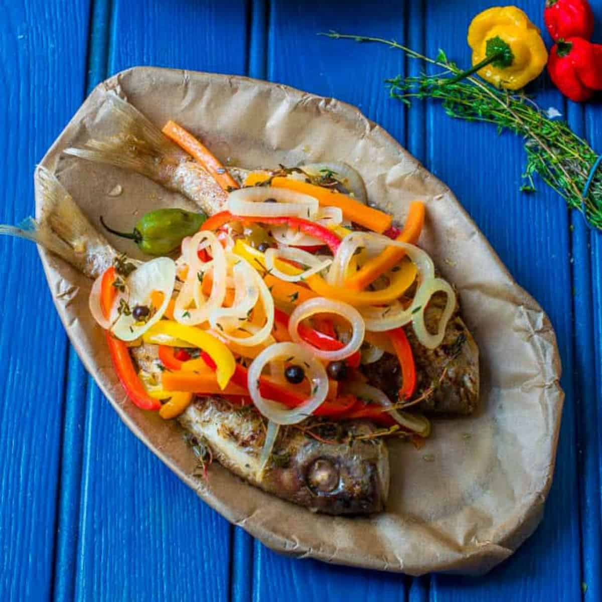

Recipes
Jerk Chicken and Rice and Peas
Origin: Jamaican
Source: My mother
Category: Main Dish

This flavorful Jerk Chicken and Rice and Peas recipe is a cherished Jamaican dish passed down from my mother. Its bold and spicy flavors make it a delightful main dish that brings a taste of Jamaica to your table.
Recipe Ingredients
- 2 lbs chicken thighs, bone-in
- 1/4 cup jerk seasoning
- 2 cups rice
Recipe Steps
- Marinate chicken thighs with jerk seasoning for at least 1 hour.
- Cook rice and peas separately according to package instructions.
- Grill or bake chicken until fully cooked, and serve over rice and peas.
Additional Food Images
Jerk Chicken on the Grill
Serving Suggestion
Close-up of Jerk Chicken
Curry Goat
Origin: Indian
Source: My mother
Category: Main Dish
Indulge in the rich and aromatic flavors of this Indian-inspired Curry Goat. Passed down from my mother, this dish combines tender goat meat with a blend of aromatic spices, creating a mouthwatering experience for any curry enthusiast.
Recipe Ingredients
- 2 lbs goat meat, cut into pieces
- 3 tablespoons curry powder
- 1 large onion, finely chopped
Recipe Steps
- Marinate goat meat with curry powder, salt, and pepper for at least 2 hours.
- Sauté chopped onions until golden brown.
- Add marinated goat meat and cook until browned. Add water and simmer until the meat is tender.
Additional Food Images
Freshly Ground Curry Seasoning
Curry Goat Cooking in a Pot
Potato Curry (Aloo Curry)

Ackee and Saltfish
Origin: Jamaican
Source: My mother
Category: Breakfast dish

Indulge in the authentic flavors of Jamaica with this delightful Ackee and Saltfish breakfast dish. Passed down from my mother, this recipe combines the unique taste of ackee fruit with salted codfish, creating a savory and satisfying start to your day.
Recipe Ingredients
- 1 can ackee, drained
- 1/2 lb salted codfish, soaked and flaked
- 1 onion, finely chopped
Recipe Steps
- Sauté chopped onions until golden brown.
- Add flaked saltfish and cook until it starts to brown.
- Gently fold in drained ackee and cook until heated through. Avoid over-stirring to maintain ackee's texture.
Additional Food Images
Fresh Ackee
Salted Codfish

Ackee and Saltfish with Dumplings
Jamaican Escovitch Fish
Origin: Jamaican
Source: Family Recipe
Category: Main Dish
Delight your taste buds with the vibrant and zesty flavors of Jamaican Escovitch Fish. This dish, deeply rooted in Jamaican culinary traditions, features crispy fried fish topped with a pickled vegetable medley, creating a symphony of flavors and textures on your plate.
Recipe Ingredients
- 2 lbs whole fish (snapper or parrotfish)
- 1 cup all-purpose flour
- 1 cup thinly sliced carrots, bell peppers, and onions (for pickling)
Recipe Steps
- Clean and season the fish with your favorite Jamaican spices.
- Coat the fish in seasoned flour and fry until golden brown and crispy.
- In a separate pan, sauté the sliced vegetables until slightly tender. Prepare a pickling solution with vinegar, sugar, and spices, then pour it over the vegetables.
- Top the fried fish with the pickled vegetable medley and serve hot.
Additional Food Images
Escovitch Fish Presentation
Close-up of Pickled Vegetables
Picture of Escovitch and festival
Jamaican Rice and Peas with Coconut Shrimp
Origin: Jamaican
Source: Family Tradition
Category: Main Dish
Transport your taste buds to the tropical flavors of Jamaica with this delightful dish of Jamaican Rice and Peas with Coconut Shrimp. A perfect fusion of creamy coconut-infused rice, flavorful peas, and succulent coconut-coated shrimp, this dish is a celebration of Caribbean cuisine at its best.
Recipe Ingredients
- 2 cups jasmine rice
- 1 can coconut milk
- 1 cup kidney beans, cooked
- 1 lb large shrimp, peeled and deveined
Recipe Steps
- Rinse the rice and combine it with coconut milk and cooked kidney beans in a pot. Cook until the rice is tender and has absorbed the coconut flavor.
- Meanwhile, marinate shrimp in a mixture of coconut milk and Jamaican spices. Coat the shrimp with shredded coconut and pan-fry until golden and crispy.
- Serve the coconut shrimp over the coconut-infused rice and peas, garnished with fresh herbs.
Additional Food Images
Serving Presentation
Coconut Shrimp Close-up
Coconut shrimp being cooked